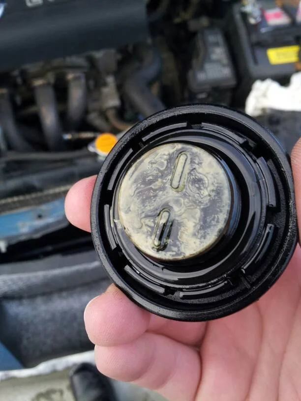

Blown Head Gasket Symptoms: 7 Warning Signs You Should Never Ignore
A blown head gasket is every car owner’s nightmare – but the sooner you spot it, the better. If your vehicle is acting strange, knowing the warning signs can save you from expensive damage down the road. In this post, we’ll cover the top symptoms of a blown head gasket and what to do if you notice them. Catching these signs early (and confirming them with a quick test) can mean the difference between a minor repair and a major engine rebuild. Let’s dive into the tell-tale signs of head gasket trouble in UK vehicles, for both DIY enthusiasts and seasoned mechanics.
What Does a Head Gasket Do (and Why It Fails)?
Your head gasket sits between the engine block and cylinder head, sealing in combustion pressure and keeping coolant and oil from mixing. When this gasket “blows” or fails, it can no longer maintain that seal. The result? Coolant, oil, and combustion gases can leak where they shouldn’t, leading to a host of problems. Overheating is the usual culprit – engines that run too hot put immense strain on the gasket, causing it to warp or crack. Other causes include poor installation or simply wear and tear over high mileage. The bottom line: a blown head gasket means your engine isn’t containing its fluids or pressures properly, and you’ll start noticing some of the symptoms below.
7 Signs of a Blown Head Gasket
While a blown head gasket can mimic other engine issues, there are a few classic symptoms that give it away. Here are seven warning signs no driver should ignore:
1. Engine Overheating Repeatedly
If your engine temperature needle keeps creeping into the red, take note. Frequent overheating – especially soon after starting a drive – can indicate a leaking head gasket. Hot combustion gases escaping into the coolant can superheat the cooling system, or coolant loss from a gasket leak can leave your engine low on coolant. In either case, the engine runs too hot. You might also notice the radiator or expansion tank boiling or bubbling when the engine is hot. While many issues can cause overheating, a blown head gasket is a prime suspect when seen with other signs below.
2. Unexplained Coolant Loss or Low Coolant Levels
Do you keep topping up the coolant, yet it mysteriously keeps getting low? A head gasket leak can allow coolant to escape into the combustion chamber (or even out of the engine entirely) without an obvious external leak. If there’s no puddle under the car, but your coolant level keeps dropping, it could be leaking into a cylinder and burning off as steam. Constantly low coolant – especially paired with overheating – is often an early sign of head gasket trouble. Don’t just keep refilling the radiator; investigate where that coolant is going.
3. Thick White Smoke from the Exhaust
White, sweet-smelling smoke billowing from your exhaust pipe is a classic symptom of a blown head gasket. That white “smoke” is actually steam. It happens when coolant leaks into a cylinder, turns to vapour during combustion, and exits through the exhaust. You might especially notice white smoke after the engine warms up or if you rev it. A little white vapour on a cold morning is usually just condensation, but persistent heavy white smoke means the engine is likely burning coolant – a strong indication that the head gasket seal to a cylinder has failed.
4. Milky or Frothy Oil (Chocolate Milkshake Oil)
Take a look at your engine oil dipstick or under the oil filler cap. Does the oil look creamy or has a milky coffee colour? This is a red flag. It means coolant and oil are mixing, often due to a blown head gasket letting coolant seep into the oil passages. Sometimes you’ll see a beige sludge (“mayo”) under the filler cap. Healthy oil should be golden or dark brown/black, not a creamy emulsion. Milky oil reduces lubrication and can wreck your engine’s bearings quickly, so if you see this symptom, stop driving and figure out why – a bad head gasket is a prime cause.
5. Visible Coolant Leaks or Puddles
Not all head gasket failures are internal; some leak coolant externally. You might spot green, yellow, or orange coolant puddled under the car near the engine, or dribbling down the engine block from the head gasket area. An obvious coolant leak on the outside of the head or block junction could mean the gasket is cracked at the outer edge. However, don’t confuse this with a leaky radiator hose or water pump – those are external leaks too. Still, if you see new fluid puddles plus other symptoms here, the head gasket could be to blame.
6. Bubbling in the Radiator or Expansion Tank
With the engine running, you might notice air bubbles continuously surfacing in the radiator or coolant expansion tank. This can happen when combustion gases sneak past a failing head gasket and into the cooling system, pressurizing it with air. The coolant might appear to “boil” even when not fully hot, or you may smell exhaust in the coolant. Bubbling in the tank, combined with overheating, is a strong sign of a combustion leak into the coolant. (Be careful opening the radiator cap on a hot engine – pressure build-up from a blown gasket can be dangerous. Always let it cool first.)
7. Loss of Power and Rough Idling
Has your once-smooth engine started running rough, misfiring, or losing power? A bad head gasket can cause one or more cylinders to lose compression, especially if the gasket damage is between two cylinders or into a cylinder. The result is often a rough idle, shaking engine, and noticeable loss of power when accelerating. You might also hear a knocking or chugging sound. Of course, many issues cause rough running, but when combined with the other symptoms (like smoke or overheating), a blown gasket is a likely cause. Essentially, the engine can’t compress its air/fuel mix properly if the gasket isn’t sealing the cylinder, leading to poor performance.
Why You Shouldn’t Ignore the Symptoms
We get it – no one wants to face a head gasket repair. It’s tempting to keep driving and hope that puff of smoke or occasional overheat is no big deal. Unfortunately, ignoring these signs can rapidly turn a minor issue into a catastrophic one. Driving with a blown head gasket is not recommended. Coolant leaking into places it shouldn’t will cause overheating, oil dilution, and possibly permanent engine damage (like a warped cylinder head or ruined bearings). In fact, continuing to drive can lead to far more expensive repairs than a gasket replacement. For example, coolant in the oil will wreck engine internals, and overheating can cause the engine block or head to crack. It’s also worth noting that the initial symptoms of a head gasket failure often start small – a slight coolant loss or a whiff of smoke – and then snowball. Small problems can become very big and very expensive, very quickly. In short, don’t ignore the warning signs. It’s better to spend a bit of time and money diagnosing and fixing a gasket issue early than to risk an engine rebuild or scrapping the car later.
What to Do If You Suspect a Blown Head Gasket
So your car is showing several of the above symptoms – what now? Here’s a sensible plan:
- Confirm the Diagnosis: The symptoms we listed can strongly suggest a blown head gasket, but it’s wise to verify it before you proceed to repairs. The easiest way to do this is with a combustion leak test kit. This simple tool can detect exhaust gases in your coolant, giving you a clear yes/no answer on head gasket leakage. For example, the LeakLogic Block-Check Blue™ combustion leak tester kit will turn its fluid from blue to yellow in under two minutes if combustion gases are present, confirming a gasket leak. If the fluid stays blue, your head gasket is likely intact, and you should investigate other causes for your symptoms. Test first to be sure; you don’t want to tear your engine apart or pour in sealant unless you know the head gasket is truly the culprit.
- Avoid Driving the Car: If you have multiple signs of a blown head gasket or a positive leak test, minimize driving the vehicle. As noted, driving in this condition can lead to much worse damage. It’s best to stop using the car for anything beyond short trips to a nearby garage. Keep the coolant topped up if you must drive a short distance, and watch the temperature gauge like a hawk.
- Plan Your Repair Strategy: Once a head gasket leak is confirmed, you have a decision to make – fix it, try a sealer, or in worst cases, replace the engine or car. For a minor leak, some people in the UK try a head gasket sealer additive as a temporary fix. A proper repair means replacing the head gasket, a labor-intensive job. We’ll discuss these options in detail in another post, but either route, knowing the extent of the problem is key. This is where your LeakLogic test results help – if the test fluid turned yellow instantly and you have heavy smoke and mixing fluids, the damage is severe and a full repair is likely needed.
- Consult a Professional: Even if you’re a DIY car owner, it can be wise to get a professional opinion. A mechanic can do further tests (compression test, cylinder leak-down test, etc.) to gauge how bad the leak is and whether, for instance, the cylinder head is warped. They can also quote you for a repair.
- Consider the Car’s Value and Usage: For an older car that’s not worth much, an expensive head gasket replacement may not make financial sense – you might opt for a temporary fix or replacement vehicle. For a newer or cherished car, investing in a proper repair is usually worth it to keep it running long-term. In either case, having confirmed the blown gasket with a test kit will give you confidence in making that decision.
- Use the Opportunity for Preventive Maintenance: If you do go ahead with a head gasket repair, address any underlying causes. For example, if a clogged radiator or broken cooling fan caused the overheating that blew the gasket, fix that too. The last thing you want is to repair the gasket only to have it fail again.
A Blown Head Gasket Is Serious. Confirm it for Sure.
A blown head gasket is serious, but it’s not the end of the world if you act quickly. By knowing these seven warning signs and taking prompt action, you can prevent a minor leak from trashing your whole engine. Always confirm your suspicions with a reliable test – the LeakLogic combustion leak tester kit is an affordable, easy way to get that peace of mind before you move forward. Remember, early detection is crucial.
Test Your Engine Now →